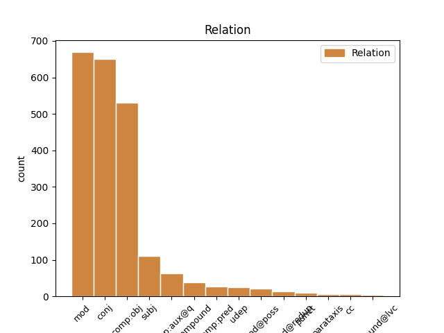
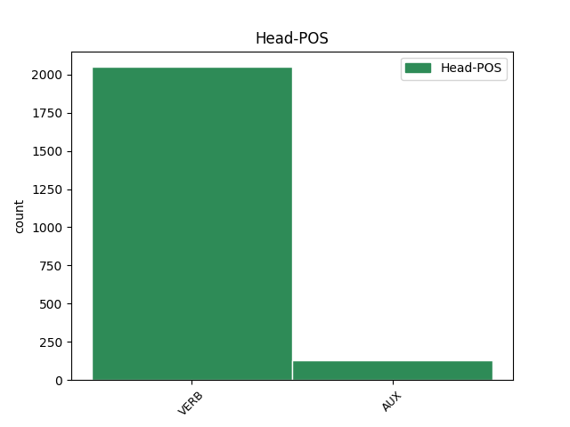
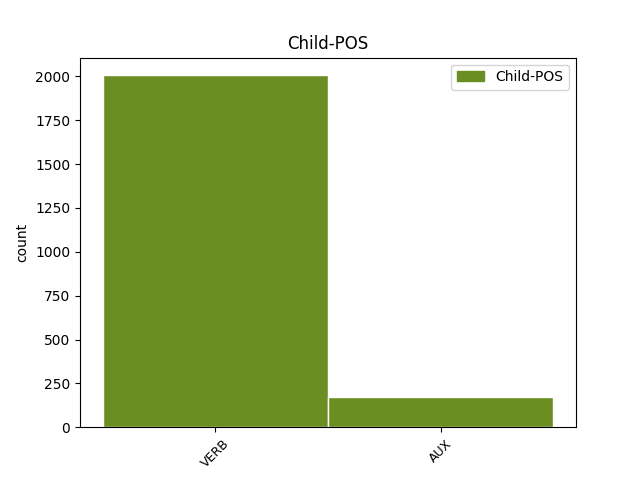

Distribution of features within this leaf



Agreement Rules sorted by frequency.
- When the dependent token is the modifer(mod) of the head token, and the dependent token is VERB.
1 Erdoğan'ın _ _ _ _ 0 _ _ _
2 milletvekili _ _ _ _ 0 _ _ _
3 ve _ _ _ _ 0 _ _ _
4 başbakan _ _ _ _ 0 _ _ _
5 olmasını _ _ _ _ 0 _ _ _
6 sağlayacak sağla VERB Verb Aspect=Perf|Mood=Ind|Polarity=Pos|Tense=Fut|VerbForm=Part 7 mod _ _
7 düzenlemede düzenle VERB Verb Aspect=Perf|Case=Loc|Mood=Ind|Polarity=Pos|Tense=Pres|VerbForm=Vnoun 0 _ _ _
8 , _ _ _ _ 0 _ _ _
9 Sezer'in _ _ _ _ 0 _ _ _
10 karşı _ _ _ _ 0 _ _ _
11 çıktığı _ _ _ _ 0 _ _ _
12 , _ _ _ _ 0 _ _ _
13 doğrudan _ _ _ _ 0 _ _ _
14 başbakanlık _ _ _ _ 0 _ _ _
15 getirecek _ _ _ _ 0 _ _ _
16 yüzdokuz _ _ _ _ 0 _ _ _
17 . _ _ _ _ 0 _ _ _
18 madde _ _ _ _ 0 _ _ _
19 yerine _ _ _ _ 0 _ _ _
20 ara _ _ _ _ 0 _ _ _
21 seçimi _ _ _ _ 0 _ _ _
22 düzenleyen _ _ _ _ 0 _ _ _
23 yetmişsekiz _ _ _ _ 0 _ _ _
24 . _ _ _ _ 0 _ _ _
25 madde _ _ _ _ 0 _ _ _
26 üzerinde _ _ _ _ 0 _ _ _
27 değişiklik _ _ _ _ 0 _ _ _
28 yapacaklarını _ _ _ _ 0 _ _ _
29 belirten _ _ _ _ 0 _ _ _
30 Şahin _ _ _ _ 0 _ _ _
31 , _ _ _ _ 0 _ _ _
32 şu _ _ _ _ 0 _ _ _
33 mesajı _ _ _ _ 0 _ _ _
34 verdi _ _ _ _ 0 _ _ _
35 : _ _ _ _ 0 _ _ _
36 . _ _ _ _ 0 _ _ _
1 Yerleştir _ _ _ _ 0 _ _ _
2 yerleştirme _ _ _ _ 0 _ _ _
3 , _ _ _ _ 0 _ _ _
4 devşir devşir VERB Verb Aspect=Perf|Mood=Imp|Number=Sing|Person=2|Polarity=Pos|Tense=Pres 0 _ _ _
5 devşirme devşir VERB Verb Aspect=Perf|Mood=Imp|Number=Sing|Person=2|Polarity=Neg|Tense=Pres 4 conj _ _
6 sınavları _ _ _ _ 0 _ _ _
7 falan _ _ _ _ 0 _ _ _
8 filan _ _ _ _ 0 _ _ _
9 yok _ _ _ _ 0 _ _ _
10 ... _ _ _ _ 0 _ _ _
1 Erdoğan'ın _ _ _ _ 0 _ _ _
2 milletvekili _ _ _ _ 0 _ _ _
3 ve _ _ _ _ 0 _ _ _
4 başbakan _ _ _ _ 0 _ _ _
5 olmasını ol VERB Verb Aspect=Perf|Case=Acc|Mood=Ind|Number[psor]=Sing|Person[psor]=3|Polarity=Pos|Tense=Pres|VerbForm=Vnoun 6 comp:obj _ _
6 sağlayacak sağla VERB Verb Aspect=Perf|Mood=Ind|Polarity=Pos|Tense=Fut|VerbForm=Part 0 _ _ _
7 düzenlemede _ _ _ _ 0 _ _ _
8 , _ _ _ _ 0 _ _ _
9 Sezer'in _ _ _ _ 0 _ _ _
10 karşı _ _ _ _ 0 _ _ _
11 çıktığı _ _ _ _ 0 _ _ _
12 , _ _ _ _ 0 _ _ _
13 doğrudan _ _ _ _ 0 _ _ _
14 başbakanlık _ _ _ _ 0 _ _ _
15 getirecek _ _ _ _ 0 _ _ _
16 yüzdokuz _ _ _ _ 0 _ _ _
17 . _ _ _ _ 0 _ _ _
18 madde _ _ _ _ 0 _ _ _
19 yerine _ _ _ _ 0 _ _ _
20 ara _ _ _ _ 0 _ _ _
21 seçimi _ _ _ _ 0 _ _ _
22 düzenleyen _ _ _ _ 0 _ _ _
23 yetmişsekiz _ _ _ _ 0 _ _ _
24 . _ _ _ _ 0 _ _ _
25 madde _ _ _ _ 0 _ _ _
26 üzerinde _ _ _ _ 0 _ _ _
27 değişiklik _ _ _ _ 0 _ _ _
28 yapacaklarını _ _ _ _ 0 _ _ _
29 belirten _ _ _ _ 0 _ _ _
30 Şahin _ _ _ _ 0 _ _ _
31 , _ _ _ _ 0 _ _ _
32 şu _ _ _ _ 0 _ _ _
33 mesajı _ _ _ _ 0 _ _ _
34 verdi _ _ _ _ 0 _ _ _
35 : _ _ _ _ 0 _ _ _
36 . _ _ _ _ 0 _ _ _
1 Pamuk _ _ _ _ 0 _ _ _
2 Prenses _ _ _ _ 0 _ _ _
3 masalının _ _ _ _ 0 _ _ _
4 üvey _ _ _ _ 0 _ _ _
5 babaya _ _ _ _ 0 _ _ _
6 uyarlanması uyarla VERB Verb Aspect=Perf|Case=Nom|Mood=Ind|Number[psor]=Sing|Person[psor]=3|Polarity=Pos|Tense=Pres|VerbForm=Vnoun|Voice=Pass 7 subj _ _
7 olmuş ol VERB Verb Aspect=Perf|Evident=Nfh|Mood=Ind|Number=Sing|Person=3|Polarity=Pos|Tense=Past 0 _ _ _
8 bence _ _ _ _ 0 _ _ _
9 . _ _ _ _ 0 _ _ _
1 İnanmıyor inan VERB Verb Aspect=Prog|Mood=Ind|Number=Sing|Person=3|Polarity=Neg|Polite=Infm|Tense=Pres 2 comp:aux@q _ _
2 musunuz mu AUX Ques Aspect=Perf|Mood=Ind|Number=Plur|Person=2|Tense=Pres 0 _ _ _
3 . _ _ _ _ 0 _ _ _
1 İkimizden _ _ _ _ 0 _ _ _
2 başka _ _ _ _ 0 _ _ _
3 kimse _ _ _ _ 0 _ _ _
4 bilmeyecek bil VERB Verb Aspect=Perf|Mood=Ind|Number=Sing|Person=3|Polarity=Neg|Tense=Fut 0 _ _ _
5 tamam _ _ _ _ 0 _ _ _
6 mı mı AUX Ques Aspect=Perf|Mood=Ind|Number=Sing|Person=3|Tense=Pres 4 conj _ SpaceAfter=No
7 ? _ _ _ _ 0 _ _ _
8 dedi _ _ _ _ 0 _ _ _
9 . _ _ _ _ 0 _ _ _
1 Ana'yı _ _ _ _ 0 _ _ _
2 arayan _ _ _ _ 0 _ _ _
3 yabancı _ _ _ _ 0 _ _ _
4 , _ _ _ _ 0 _ _ _
5 sizden _ _ _ _ 0 _ _ _
6 biraz _ _ _ _ 0 _ _ _
7 daha _ _ _ _ 0 _ _ _
8 uzun _ _ _ _ 0 _ _ _
9 boylu _ _ _ _ 0 _ _ _
10 ydu i AUX Zero Aspect=Perf|Mood=Ind|Number=Sing|Person=3|Tense=Past 12 comp:obj _ _
11 , _ _ _ _ 0 _ _ _
12 dedi de VERB Verb Aspect=Perf|Mood=Ind|Number=Sing|Person=3|Polarity=Pos|Tense=Past 0 _ _ _
13 Jul _ _ _ _ 0 _ _ _
14 . _ _ _ _ 0 _ _ _
1 Bunlar _ _ _ _ 0 _ _ _
2 olup ol VERB Verb Aspect=Perf|Mood=Ind|Polarity=Pos|Tense=Pres|VerbForm=Conv 0 _ _ _
3 biterken bit VERB Verb Aspect=Hab|Mood=Ind|Number=Sing|Person=3|Polarity=Pos|Tense=Pres|VerbForm=Conv 2 compound _ _
4 küçük _ _ _ _ 0 _ _ _
5 sarışın _ _ _ _ 0 _ _ _
6 çocuk _ _ _ _ 0 _ _ _
7 , _ _ _ _ 0 _ _ _
8 kucağında _ _ _ _ 0 _ _ _
9 , _ _ _ _ 0 _ _ _
10 bacaklarının _ _ _ _ 0 _ _ _
11 arasına _ _ _ _ 0 _ _ _
12 sıkıştırdığı _ _ _ _ 0 _ _ _
13 darbukaya _ _ _ _ 0 _ _ _
14 sol _ _ _ _ 0 _ _ _
15 eliyle _ _ _ _ 0 _ _ _
16 hiç _ _ _ _ 0 _ _ _
17 ses _ _ _ _ 0 _ _ _
18 çıkarmadan _ _ _ _ 0 _ _ _
19 , _ _ _ _ 0 _ _ _
20 okşarcasına _ _ _ _ 0 _ _ _
21 vuruyor _ _ _ _ 0 _ _ _
22 , _ _ _ _ 0 _ _ _
23 sağ _ _ _ _ 0 _ _ _
24 eliyle _ _ _ _ 0 _ _ _
25 de _ _ _ _ 0 _ _ _
26 tabağında _ _ _ _ 0 _ _ _
27 kileri _ _ _ _ 0 _ _ _
28 ağzına _ _ _ _ 0 _ _ _
29 tıkıştırıyordu _ _ _ _ 0 _ _ _
30 . _ _ _ _ 0 _ _ _
1 O _ _ _ _ 0 _ _ _
2 da _ _ _ _ 0 _ _ _
3 , _ _ _ _ 0 _ _ _
4 ben _ _ _ _ 0 _ _ _
5 im _ _ _ _ 0 _ _ _
6 gibi _ _ _ _ 0 _ _ _
7 , _ _ _ _ 0 _ _ _
8 bir _ _ _ _ 0 _ _ _
9 kente _ _ _ _ 0 _ _ _
10 geldi gel VERB Verb Aspect=Perf|Mood=Ind|Number=Sing|Person=3|Polarity=Pos|Tense=Past 0 _ _ _
11 mi mi AUX Ques Aspect=Perf|Mood=Ind|Number=Sing|Person=3|Tense=Pres 10 mod _ SpaceAfter=No
12 , _ _ _ _ 0 _ _ _
13 kentin _ _ _ _ 0 _ _ _
14 en _ _ _ _ 0 _ _ _
15 canlı _ _ _ _ 0 _ _ _
16 yerini _ _ _ _ 0 _ _ _
17 seçer _ _ _ _ 0 _ _ _
18 , _ _ _ _ 0 _ _ _
19 kahvelerin _ _ _ _ 0 _ _ _
20 de _ _ _ _ 0 _ _ _
21 tiryakisi _ _ _ _ 0 _ _ _
22 dir _ _ _ _ 0 _ _ _
23 . _ _ _ _ 0 _ _ _
1 Bu _ _ _ _ 0 _ _ _
2 büyüme _ _ _ _ 0 _ _ _
3 için _ _ _ _ 0 _ _ _
4 öncelikle _ _ _ _ 0 _ _ _
5 makroekonomik _ _ _ _ 0 _ _ _
6 istikrarın _ _ _ _ 0 _ _ _
7 en _ _ _ _ 0 _ _ _
8 geç _ _ _ _ 0 _ _ _
9 iki _ _ _ _ 0 _ _ _
10 yıl _ _ _ _ 0 _ _ _
11 içinde _ _ _ _ 0 _ _ _
12 sağlanması _ _ _ _ 0 _ _ _
13 gerektiğine _ _ _ _ 0 _ _ _
14 dikkat _ _ _ _ 0 _ _ _
15 çeken _ _ _ _ 0 _ _ _
16 Özilhan _ _ _ _ 0 _ _ _
17 , _ _ _ _ 0 _ _ _
18 işsizlik _ _ _ _ 0 _ _ _
19 konusunda _ _ _ _ 0 _ _ _
20 yalnızca _ _ _ _ 0 _ _ _
21 büyümenin _ _ _ _ 0 _ _ _
22 yeterli _ _ _ _ 0 _ _ _
23 olmadığını _ _ _ _ 0 _ _ _
24 , _ _ _ _ 0 _ _ _
25 aynı _ _ _ _ 0 _ _ _
26 zamanda _ _ _ _ 0 _ _ _
27 AKP'nin _ _ _ _ 0 _ _ _
28 istihdamın _ _ _ _ 0 _ _ _
29 önünde _ _ _ _ 0 _ _ _
30 yükselen _ _ _ _ 0 _ _ _
31 duvarların _ _ _ _ 0 _ _ _
32 da _ _ _ _ 0 _ _ _
33 yıkılması yık VERB Verb Aspect=Perf|Case=Nom|Mood=Ind|Number[psor]=Sing|Person[psor]=3|Polarity=Pos|Tense=Pres|VerbForm=Vnoun|Voice=Pass 35 mod@poss _ _
34 Arch _ _ _ _ 0 _ _ _
35 gerektiğini gerek VERB Verb Aspect=Perf|Case=Acc|Mood=Ind|Number[psor]=Sing|Person[psor]=3|Polarity=Pos|Tense=Past|VerbForm=Part 0 _ _ _
36 belirtti _ _ _ _ 0 _ _ _
37 . _ _ _ _ 0 _ _ _
1 Bir _ _ _ _ 0 _ _ _
2 dilim _ _ _ _ 0 _ _ _
3 ekmeğe _ _ _ _ 0 _ _ _
4 muhtaç _ _ _ _ 0 _ _ _
5 ız i AUX Zero Aspect=Perf|Mood=Ind|Number=Plur|Person=1|Tense=Pres 8 udep _ _
6 , _ _ _ _ 0 _ _ _
7 diye _ _ _ _ 0 _ _ _
8 yanıtlamış yanıtla VERB Verb Aspect=Perf|Evident=Nfh|Mood=Ind|Number=Sing|Person=3|Polarity=Pos|Tense=Past 0 _ _ _
9 küçük _ _ _ _ 0 _ _ _
10 kız _ _ _ _ 0 _ _ _
11 . _ _ _ _ 0 _ _ _
1 Çocuğun _ _ _ _ 0 _ _ _
2 tabakta _ _ _ _ 0 _ _ _
3 kileri _ _ _ _ 0 _ _ _
4 bir _ _ _ _ 0 _ _ _
5 solukta _ _ _ _ 0 _ _ _
6 silip sil VERB Verb Aspect=Perf|Mood=Ind|Polarity=Pos|Tense=Pres|VerbForm=Conv 0 _ _ _
7 süpüreceğini süpür VERB Verb Aspect=Perf|Case=Acc|Mood=Ind|Number[psor]=Sing|Person[psor]=3|Polarity=Pos|Tense=Fut|VerbForm=Part 6 compound@redup _ _
8 biliyordu _ _ _ _ 0 _ _ _
9 artık _ _ _ _ 0 _ _ _
10 . _ _ _ _ 0 _ _ _
1 Yok _ _ _ _ 0 _ _ _
2 , _ _ _ _ 0 _ _ _
3 yok _ _ _ _ 0 _ _ _
4 , _ _ _ _ 0 _ _ _
5 bilmez bil VERB Verb Aspect=Hab|Mood=Ind|Polarity=Neg|Tense=Pres|VerbForm=Part 6 comp:pred _ _
6 değilim değil VERB Neg Aspect=Perf|Mood=Ind|Number=Sing|Person=1|Polarity=Neg|Tense=Pres 0 _ _ _
7 : _ _ _ _ 0 _ _ _
8 birçok _ _ _ _ 0 _ _ _
9 eski _ _ _ _ 0 _ _ _
10 dinin _ _ _ _ 0 _ _ _
11 ürettiği _ _ _ _ 0 _ _ _
12 efsaneler _ _ _ _ 0 _ _ _
13 , _ _ _ _ 0 _ _ _
14 iğretilemeler _ _ _ _ 0 _ _ _
15 , _ _ _ _ 0 _ _ _
16 kısa _ _ _ _ 0 _ _ _
17 öykücükler _ _ _ _ 0 _ _ _
18 de _ _ _ _ 0 _ _ _
19 söylemek _ _ _ _ 0 _ _ _
20 ister _ _ _ _ 0 _ _ _
21 bunu _ _ _ _ 0 _ _ _
22 ; _ _ _ _ 0 _ _ _
23 ama _ _ _ _ 0 _ _ _
24 bambaşka _ _ _ _ 0 _ _ _
25 bir _ _ _ _ 0 _ _ _
26 anlamda _ _ _ _ 0 _ _ _
27 . _ _ _ _ 0 _ _ _
1 Sözleşmelerde _ _ _ _ 0 _ _ _
2 yer _ _ _ _ 0 _ _ _
3 alan _ _ _ _ 0 _ _ _
4 tüketici _ _ _ _ 0 _ _ _
5 aleyhine _ _ _ _ 0 _ _ _
6 koşullara _ _ _ _ 0 _ _ _
7 ilişkin _ _ _ _ 0 _ _ _
8 düzenleme _ _ _ _ 0 _ _ _
9 yapılarak yap VERB Verb Aspect=Perf|Mood=Ind|Polarity=Pos|Tense=Pres|VerbForm=Conv|Voice=Pass 16 punct _ SpaceAfter=No
10 , _ _ _ _ 0 _ _ _
11 bu _ _ _ _ 0 _ _ _
12 tür _ _ _ _ 0 _ _ _
13 hükümlerin _ _ _ _ 0 _ _ _
14 na _ _ _ _ 0 _ _ _
15 olması _ _ _ _ 0 _ _ _
16 sağlanıyor sağla VERB Verb Aspect=Prog|Mood=Ind|Number=Sing|Person=3|Polarity=Pos|Polite=Infm|Tense=Pres|Voice=Pass 0 _ _ _
17 . _ _ _ _ 0 _ _ _
1 Bu _ _ _ _ 0 _ _ _
2 kazada _ _ _ _ 0 _ _ _
3 , _ _ _ _ 0 _ _ _
4 otobüsün _ _ _ _ 0 _ _ _
5 altında _ _ _ _ 0 _ _ _
6 ezilen _ _ _ _ 0 _ _ _
7 kişinin _ _ _ _ 0 _ _ _
8 beş _ _ _ _ 0 _ _ _
9 duyu _ _ _ _ 0 _ _ _
10 organından _ _ _ _ 0 _ _ _
11 beynine _ _ _ _ 0 _ _ _
12 giden _ _ _ _ 0 _ _ _
13 sinirler _ _ _ _ 0 _ _ _
14 , _ _ _ _ 0 _ _ _
15 bir _ _ _ _ 0 _ _ _
16 başka _ _ _ _ 0 _ _ _
17 insanın _ _ _ _ 0 _ _ _
18 , _ _ _ _ 0 _ _ _
19 örneğin _ _ _ _ 0 _ _ _
20 ( _ _ _ _ 0 _ _ _
21 eğer _ _ _ _ 0 _ _ _
22 bugün _ _ _ _ 0 _ _ _
23 yaşasa yaşa VERB Verb Aspect=Perf|Mood=Cnd|Number=Sing|Person=3|Polarity=Pos|Tense=Pres 31 parataxis _ SpaceAfter=No
24 ) _ _ _ _ 0 _ _ _
25 George _ _ _ _ 0 _ _ _
26 Politzer'in _ _ _ _ 0 _ _ _
27 beynine _ _ _ _ 0 _ _ _
28 paralel _ _ _ _ 0 _ _ _
29 bir _ _ _ _ 0 _ _ _
30 bağlantıyla _ _ _ _ 0 _ _ _
31 bağlansa bağla VERB Verb Aspect=Perf|Mood=Cnd|Number=Sing|Person=3|Polarity=Pos|Tense=Pres|Voice=Pass 0 _ _ _
32 , _ _ _ _ 0 _ _ _
33 kazada _ _ _ _ 0 _ _ _
34 ki _ _ _ _ 0 _ _ _
35 kişiye _ _ _ _ 0 _ _ _
36 otobüs _ _ _ _ 0 _ _ _
37 çarptığı _ _ _ _ 0 _ _ _
38 anda _ _ _ _ 0 _ _ _
39 , _ _ _ _ 0 _ _ _
40 o _ _ _ _ 0 _ _ _
41 sırada _ _ _ _ 0 _ _ _
42 evinde _ _ _ _ 0 _ _ _
43 oturmakta _ _ _ _ 0 _ _ _
44 olan _ _ _ _ 0 _ _ _
45 Politzer'e _ _ _ _ 0 _ _ _
46 de _ _ _ _ 0 _ _ _
47 otobüs _ _ _ _ 0 _ _ _
48 çarpacaktır _ _ _ _ 0 _ _ _
49 . _ _ _ _ 0 _ _ _
1 Arınç _ _ _ _ 0 _ _ _
2 kürsüde _ _ _ _ 0 _ _ _
3 önem _ _ _ _ 0 _ _ _
4 li _ _ _ _ 0 _ _ _
5 açıklamalar açıkla VERB Verb Aspect=Perf|Case=Nom|Mood=Ind|Polarity=Pos|Tense=Pres|VerbForm=Vnoun 0 _ _ _
6 yaparken yap VERB Verb Aspect=Hab|Mood=Ind|Number=Sing|Person=3|Polarity=Pos|Tense=Pres|VerbForm=Conv 5 compound@lvc _ SpaceAfter=No
7 , _ _ _ _ 0 _ _ _
8 babayla _ _ _ _ 0 _ _ _
9 oğlu _ _ _ _ 0 _ _ _
10 da _ _ _ _ 0 _ _ _
11 anfide _ _ _ _ 0 _ _ _
12 sohbet _ _ _ _ 0 _ _ _
13 etti _ _ _ _ 0 _ _ _
14 . _ _ _ _ 0 _ _ _
1 Mahmut _ _ _ _ 0 _ _ _
2 , _ _ _ _ 0 _ _ _
3 kapının _ _ _ _ 0 _ _ _
4 aralığından _ _ _ _ 0 _ _ _
5 başını _ _ _ _ 0 _ _ _
6 uzatıp uza VERB Verb Aspect=Perf|Mood=Ind|Polarity=Pos|Tense=Pres|VerbForm=Conv|Voice=Cau 8 udep _ _
7 bana _ _ _ _ 0 _ _ _
8 baktı bak VERB Verb Aspect=Perf|Mood=Ind|Number=Sing|Person=3|Polarity=Pos|Tense=Past 0 _ _ _
9 . _ _ _ _ 0 _ _ _
1 Silisimi _ _ _ _ 0 _ _ _
2 beğendiği _ _ _ _ 0 _ _ _
3 için _ _ _ _ 0 _ _ _
4 yüz _ _ _ _ 0 _ _ _
5 bin _ _ _ _ 0 _ _ _
6 lira _ _ _ _ 0 _ _ _
7 verdi ver VERB Verb Aspect=Perf|Mood=Ind|Number=Sing|Person=3|Polarity=Pos|Tense=Past 12 cc _ SpaceAfter=No
8 , _ _ _ _ 0 _ _ _
9 hem _ _ _ _ 0 _ _ _
10 yine _ _ _ _ 0 _ _ _
11 görüşürüz _ _ _ _ 0 _ _ _
12 dedi de VERB Verb Aspect=Perf|Mood=Ind|Number=Sing|Person=3|Polarity=Pos|Tense=Past 0 _ _ _
13 . _ _ _ _ 0 _ _ _
1 Nasıl _ _ _ _ 0 _ _ _
2 sınız i AUX Zero Aspect=Perf|Mood=Ind|Number=Plur|Person=2|Tense=Pres 10 comp:aux@q _ _
3 ? _ _ _ _ 0 _ _ _
4 Vurgu _ _ _ _ 0 _ _ _
5 : _ _ _ _ 0 _ _ _
6 Ortadan _ _ _ _ 0 _ _ _
7 kayboldunuz _ _ _ _ 0 _ _ _
8 , _ _ _ _ 0 _ _ _
9 iyileştiniz _ _ _ _ 0 _ _ _
10 mi mi AUX Ques Aspect=Perf|Mood=Ind|Number=Sing|Person=3|Tense=Pres 0 _ _ _
11 ? _ _ _ _ 0 _ _ _
1 Canı _ _ _ _ 0 _ _ _
2 sıkılmış sıkıl VERB Verb Aspect=Perf|Evident=Nfh|Mood=Ind|Number=Sing|Person=3|Polarity=Pos|Tense=Past 0 _ _ _
3 gibi _ _ _ _ 0 _ _ _
4 ydi i AUX Zero Aspect=Perf|Mood=Ind|Number=Sing|Person=3|Tense=Past 2 punct _ _
5 . _ _ _ _ 0 _ _ _
1 " _ _ _ _ 0 _ _ _
2 Bu _ _ _ _ 0 _ _ _
3 tanımla _ _ _ _ 0 _ _ _
4 , _ _ _ _ 0 _ _ _
5 örneğin _ _ _ _ 0 _ _ _
6 Almanya'da _ _ _ _ 0 _ _ _
7 şirket _ _ _ _ 0 _ _ _
8 kuran _ _ _ _ 0 _ _ _
9 vergisini _ _ _ _ 0 _ _ _
10 Alman _ _ _ _ 0 _ _ _
11 hükümetine _ _ _ _ 0 _ _ _
12 ödeyen _ _ _ _ 0 _ _ _
13 fakat _ _ _ _ 0 _ _ _
14 Türk _ _ _ _ 0 _ _ _
15 vatandaşı _ _ _ _ 0 _ _ _
16 olan _ _ _ _ 0 _ _ _
17 kimseler _ _ _ _ 0 _ _ _
18 yerli _ _ _ _ 0 _ _ _
19 ama _ _ _ _ 0 _ _ _
20 Türkiye'de _ _ _ _ 0 _ _ _
21 yıllardan _ _ _ _ 0 _ _ _
22 beri _ _ _ _ 0 _ _ _
23 yerleşik _ _ _ _ 0 _ _ _
24 bulunan _ _ _ _ 0 _ _ _
25 biz _ _ _ _ 0 _ _ _
26 ler i AUX Zero Aspect=Perf|Mood=Ind|Number=Plur|Person=3|Tense=Pres 28 subj _ _
27 yabancı _ _ _ _ 0 _ _ _
28 oluyoruz ol VERB Verb Aspect=Prog|Mood=Ind|Number=Plur|Person=1|Polarity=Pos|Polite=Infm|Tense=Pres 0 _ _ _
29 " _ _ _ _ 0 _ _ _
30 diyen _ _ _ _ 0 _ _ _
31 ' _ _ _ _ 0 _ _ _
32 , _ _ _ _ 0 _ _ _
33 teknik _ _ _ _ 0 _ _ _
34 bir _ _ _ _ 0 _ _ _
35 hata _ _ _ _ 0 _ _ _
36 olabileceğine _ _ _ _ 0 _ _ _
37 dikkat _ _ _ _ 0 _ _ _
38 çekti _ _ _ _ 0 _ _ _
39 . _ _ _ _ 0 _ _ _
1 Bizde _ _ _ _ 0 _ _ _
2 , _ _ _ _ 0 _ _ _
3 günahı _ _ _ _ 0 _ _ _
4 işledin _ _ _ _ 0 _ _ _
5 mi mi AUX Ques Aspect=Perf|Mood=Ind|Number=Sing|Person=3|Tense=Pres 6 cc _ _
6 bitti bit VERB Verb Aspect=Perf|Mood=Ind|Number=Sing|Person=3|Polarity=Pos|Tense=Past 0 _ _ _
7 . _ _ _ _ 0 _ _ _
Disagree Examples:
1 Penceresinden _ _ _ _ 0 _ _ _
2 görünen görün VERB Verb Aspect=Perf|Mood=Ind|Polarity=Pos|Tense=Pres|VerbForm=Part 3 comp:pred _ _
3 dir i AUX Zero Aspect=Perf|Mood=Gen|Number=Sing|Person=3|Tense=Pres 0 _ _ _
4 . _ _ _ _ 0 _ _ _
1 Yerde _ _ _ _ 0 _ _ _
2 araç _ _ _ _ 0 _ _ _
3 izinin _ _ _ _ 0 _ _ _
4 olmaması ol VERB Verb Aspect=Perf|Case=Nom|Mood=Ind|Number[psor]=Sing|Person[psor]=3|Polarity=Neg|Tense=Pres|VerbForm=Vnoun 0 _ _ _
5 ve _ _ _ _ 0 _ _ _
6 kamyonun _ _ _ _ 0 _ _ _
7 ilerleyecek _ _ _ _ 0 _ _ _
8 yol _ _ _ _ 0 _ _ _
9 bulamaması bul VERB Verb Aspect=Perf|Case=Nom|Mood=Pot|Number[psor]=Sing|Person[psor]=3|Polarity=Neg|Tense=Pres|VerbForm=Vnoun 4 conj _ SpaceAfter=No
10 , _ _ _ _ 0 _ _ _
11 ormanın _ _ _ _ 0 _ _ _
12 bu _ _ _ _ 0 _ _ _
13 bölümüne _ _ _ _ 0 _ _ _
14 kasabadan _ _ _ _ 0 _ _ _
15 sıkça _ _ _ _ 0 _ _ _
16 gelinmediğini _ _ _ _ 0 _ _ _
17 gösteriyordu _ _ _ _ 0 _ _ _
18 . _ _ _ _ 0 _ _ _
1 Yerde _ _ _ _ 0 _ _ _
2 araç _ _ _ _ 0 _ _ _
3 izinin _ _ _ _ 0 _ _ _
4 olmaması _ _ _ _ 0 _ _ _
5 ve _ _ _ _ 0 _ _ _
6 kamyonun _ _ _ _ 0 _ _ _
7 ilerleyecek _ _ _ _ 0 _ _ _
8 yol _ _ _ _ 0 _ _ _
9 bulamaması bul VERB Verb Aspect=Perf|Case=Nom|Mood=Pot|Number[psor]=Sing|Person[psor]=3|Polarity=Neg|Tense=Pres|VerbForm=Vnoun 0 _ _ _
10 , _ _ _ _ 0 _ _ _
11 ormanın _ _ _ _ 0 _ _ _
12 bu _ _ _ _ 0 _ _ _
13 bölümüne _ _ _ _ 0 _ _ _
14 kasabadan _ _ _ _ 0 _ _ _
15 sıkça _ _ _ _ 0 _ _ _
16 gelinmediğini gel VERB Verb Aspect=Perf|Case=Acc|Mood=Ind|Number[psor]=Sing|Person[psor]=3|Polarity=Neg|Tense=Past|VerbForm=Part|Voice=Pass 9 conj _ _
17 gösteriyordu _ _ _ _ 0 _ _ _
18 . _ _ _ _ 0 _ _ _
1 Erkek _ _ _ _ 0 _ _ _
2 öğretmen _ _ _ _ 0 _ _ _
3 daha _ _ _ _ 0 _ _ _
4 sert _ _ _ _ 0 _ _ _
5 olur ol VERB Verb Aspect=Hab|Mood=Ind|Number=Sing|Person=3|Polarity=Pos|Tense=Pres 0 _ _ _
6 , _ _ _ _ 0 _ _ _
7 kızlarla _ _ _ _ 0 _ _ _
8 anlaşamaz anlaş VERB Verb Aspect=Hab|Mood=Pot|Number=Sing|Person=3|Polarity=Neg|Tense=Pres 5 conj _ _
9 diye _ _ _ _ 0 _ _ _
10 düşünüyorum _ _ _ _ 0 _ _ _
11 . _ _ _ _ 0 _ _ _
1 İzini _ _ _ _ 0 _ _ _
2 bulursanız bul VERB Verb Aspect=Hab|Mood=Cnd|Number=Plur|Person=2|Polarity=Pos|Tense=Pres 9 comp:obj _ SpaceAfter=No
3 , _ _ _ _ 0 _ _ _
4 bu _ _ _ _ 0 _ _ _
5 numaraya _ _ _ _ 0 _ _ _
6 haber _ _ _ _ 0 _ _ _
7 verirsiniz _ _ _ _ 0 _ _ _
8 , _ _ _ _ 0 _ _ _
9 dedi de VERB Verb Aspect=Perf|Mood=Ind|Number=Sing|Person=3|Polarity=Pos|Tense=Past 0 _ _ _
10 . _ _ _ _ 0 _ _ _